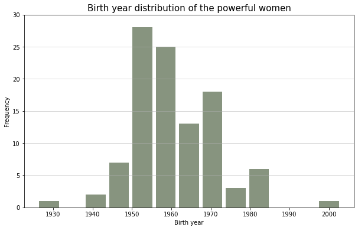
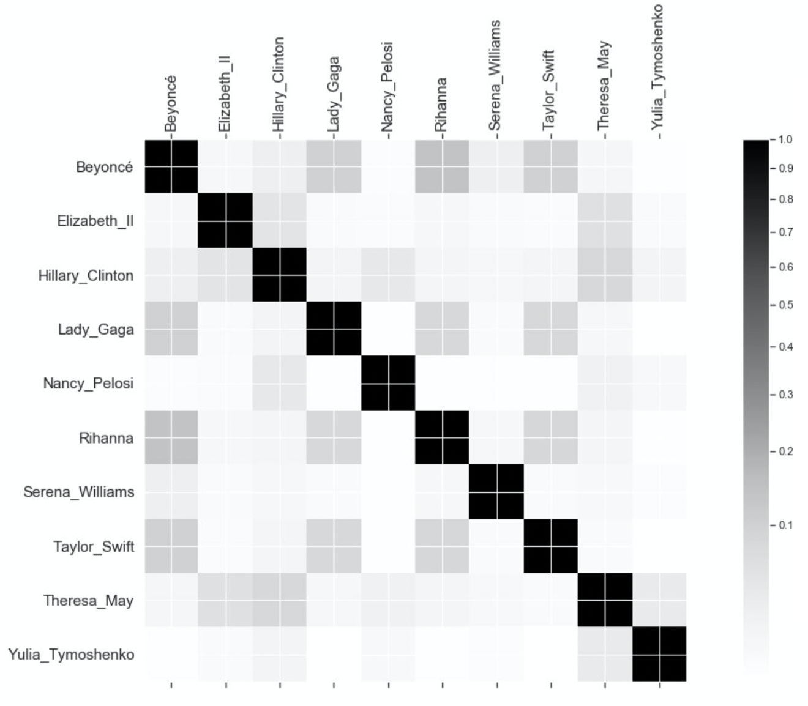
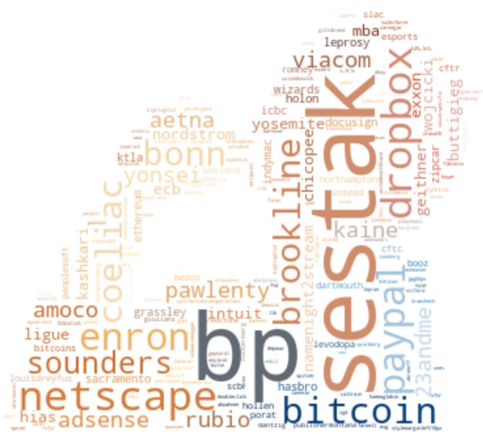
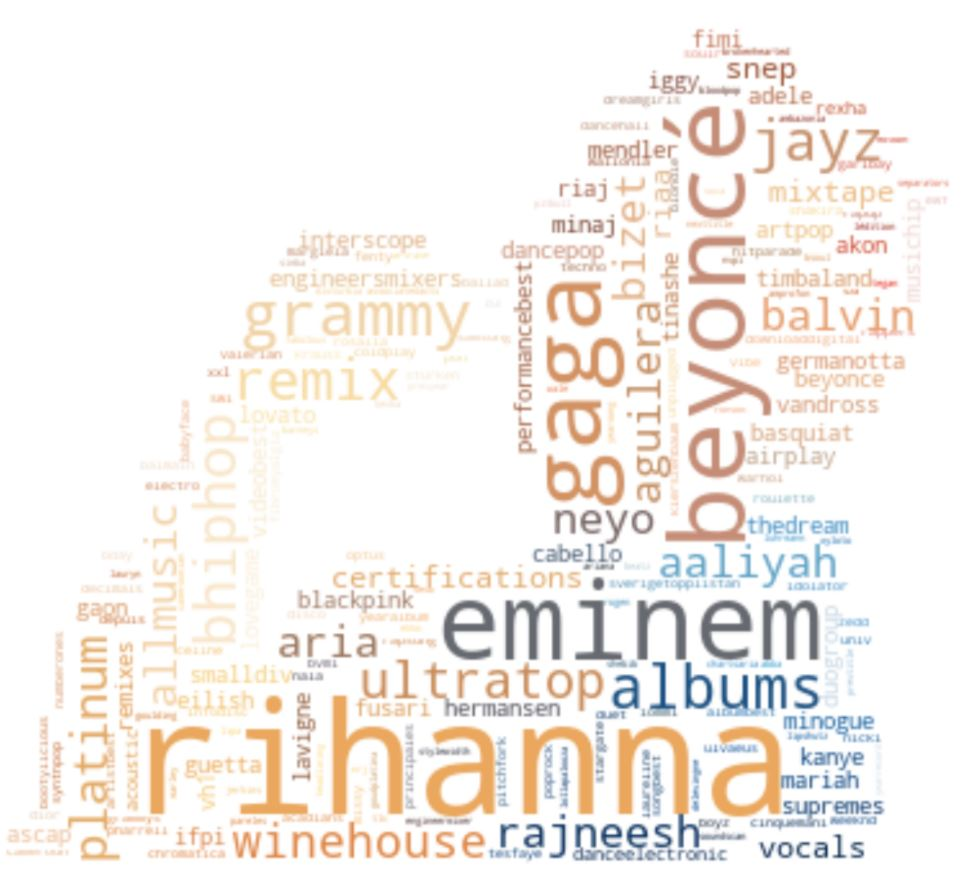
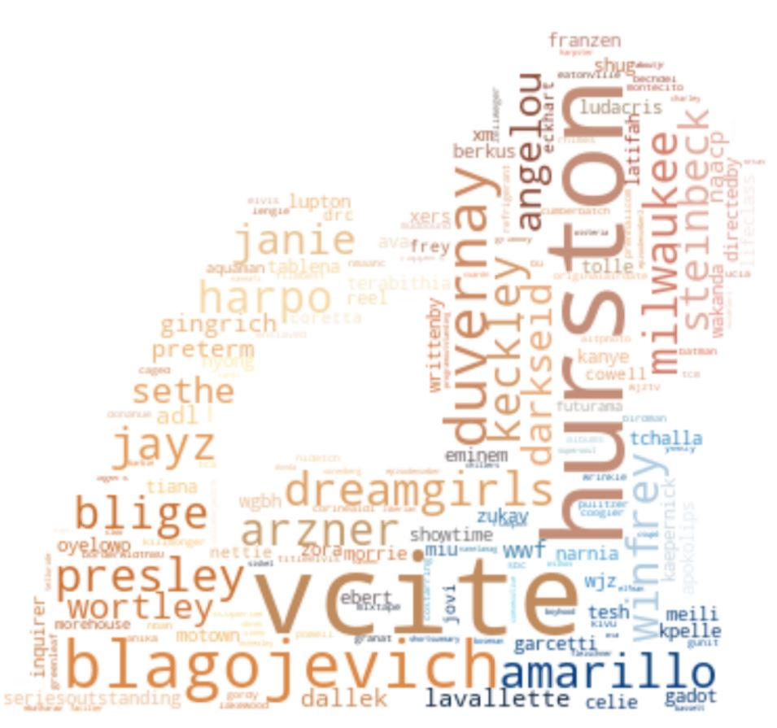
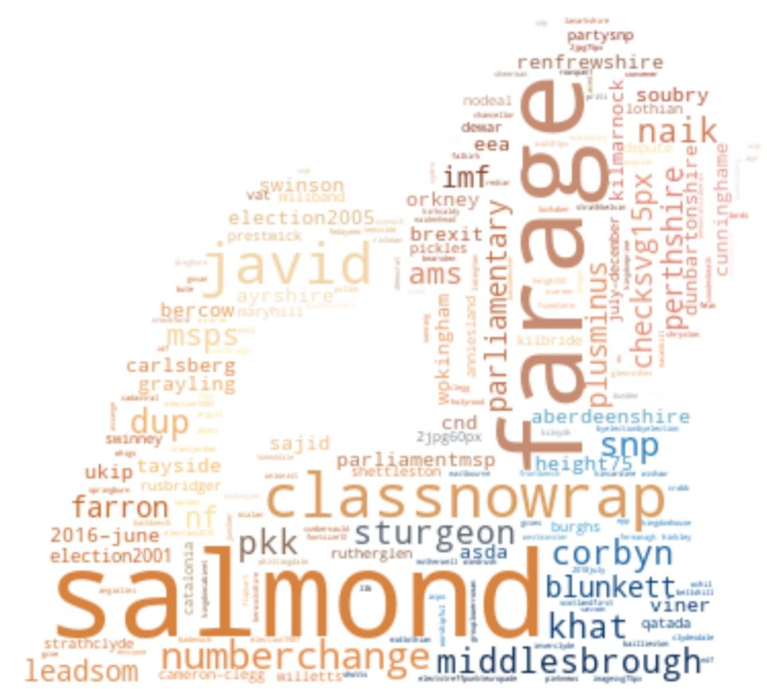
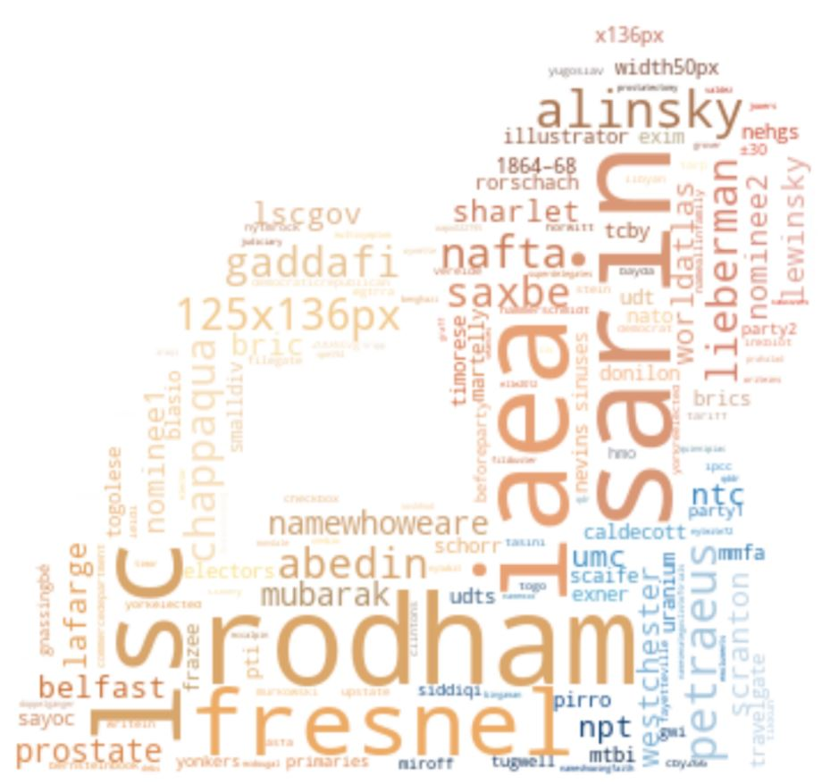
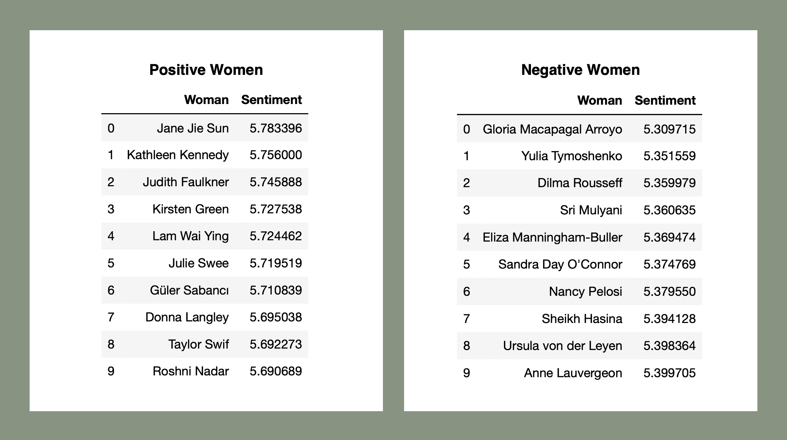
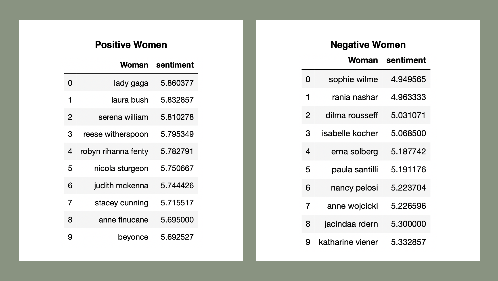

It's quite easy to see who has the most internal connections - it is Hillary Clinton, the largest node
of the network, with a connection to 32 other powerful women. The largest one behind her is Angela
Merkel, chancellor of Germany since 2005, with 13 connections. She is also the most
powerful woman in the world right now, having sat at the top of the list consistently since 2006,
with an exception of then first lady of the USA Michelle Obama topping it in 2010
(source).
Her dominance even continues, with her sitting at the top spot once again in the newly released
2020 list. Other notable women in the network
graph are for example Beyoncé, Oprah Winfrey and Condoleezza Rice. Beyoncé is one of the most famous
singers in the world, Winfrey one of the most prevalent women in the entertainment industry and Rice
a US politician, most notably a former US Secretary of State. Delving even further into this network
and observing the links between the women is fascinating.
-

This age distribution doesn't come as much of a surprise. Most of the powerful women are in the mid- to upper
age range, from around 50 to 70 years old. These are women who have been working in their field for a long
time and established their place. The oldest woman on the list is Queen Elizabeth II, turning 94 years old
this year, and the youngest one, hardly a woman, is the 17-year-old Swedish global warming activist,
Greta Thunberg.
-

These results aren't really shocking - most of the powerful women are born in, or come from, the USA, or 44 of those who have available data on this. Other countries have just a few to one women being born in them. After the USA comes England, with 6 women being born there.

Similarity between the most connected women
The most powerful women come from all over the world, and they all work in very different fields - but do they have any
similarities? This needs to be analysed by using text analysis. The Wikipedia data for the top 10 most connected women is
extracted, TF-IDF rankings made for each word in their pages and then a cosine similarity is used on all the words
between the top 10 women. The results can be seen in the matrix graph to the left, which mainly implies that the women
don't seem to have many similarities. However, there seem to be some minor similarities which are expected, such as between
the musicians and politicians. This can be seen by for example looking at the similarity of Beyoncé in regards to the other women.
She has the highest similarity with Lady Gaga, Rihanna and Taylor Swift - all famous singers.
Community detection
The Louvain method for community detection is used to detect communities within the network.
A total of 43 communities are found within the whole network using this method and will the word
clouds representing the top 6 communities, i.e. those with the biggest number of nodes, be listed
here below. Can you see who forms the clouds?
-

The first community, and the biggest one, centers around technology and finance. In the community
there are around 40 of the most powerful women. To name a few: Abigail Johnson, Aileen Lee, Amy
Hood, Julie Sweet, Lynn Good and Ruth Porat are all in this community. The women have one noticable
thing in common - they are successful businesswomen in the financial sector.
-
The second community revolves around the game of tennis. Serena Williams is the only powerful woman
in this community which is understandable since there are no other female athletes on the most powerful
women lists. She stands alone! Phrases such as Wimbledon, doubles, singles and even game scores all
appear in the word cloud, everything related to tennis.
-

The third community centers around the music industry. In the community there are 3 powerful,
and very famous, women: Beyoncé, Lady Gaga and Rihanna. These women have an obvious connection -
they are all famous musicians. Many recognisable words can be found in the cloud, even some other
artists!
-

The fourth community revolves around the entertainment and arts industries. In the word cloud there
are words such as Dreamgirls, Presley and Hurston, which all relate to the industry mentioned. In
the community there are three powerful women: Ava Duvernay, Oprah Winfrey and Bonnie Hammer, all a
part of the entertainment industry.
-

The fifth community revolves around Great Britain. In the word cloud there are words such as Salmond,
Farage and Corbyn, who are all British politicans. In the community there are five powerful women:
Ana Botin, Judith McKenna, Kaherine Viener, Nichola Sturgeon and Theresa May, who all have in common
that they are either of British descent or live and work in Britain.
-

The sixth community revolves only around Hillary Clinton. Not surprisingly, since she is the biggest
node in the whole network. In the word cloud there are words that revolve
around her directly: Rodham, for example, which is her maiden name. Fresnel, which is the type
of glass used in here eyeglasses since she has a particularly bad vision. Sarin, which is a lethal
gas that she was accused of approving delivery of to Syrian Rebels. And other equally random words
which all have some relation to her!
Sentiment Analysis
Being powerful doesn't automatically make you a good person (in fact, it seems to be
quite the contrary in many cases). By using sentiment
analysis, the Wikipedia pages of each of the women is inspected to try and detect if the women have a positive
or negative impact on society. However, since Wikipedia pages often tend to be quite neutrally written, the Twitter
feeds of the women is also gathered to analyse text that they have written themselves and not only text that
has been written about them. Are the two sentiments completely different?
First, the sentiments from the Wikipedia pages are calculated and displayed.

The sentiments for the most powerful women are quite similar, which is to be expected.
According to the calculations, Jane Jie Sun is the most positive woman. Jane is a Chinese businesswoman and the
CEO of the largest online travel agency in China. Jane's Wikipedia page is quite short, which means that when a
positive word occurs in her article, it has a much higher value than when a positive word appearas on a longer
page, which might be the reason for her being at the top of the positivity list. On the other end,
Maria Macapagal Arroyo has been deemed the most negative woman. Maria is the former president of the Philippines
who was accused of corruption. Those charges have since been dismissed but might explain her low score.
Now, the sentiments from the Twitter feeds of the women are calculated. Unfortunately,
only 58 of the women had a verified Twitter account, but the analysis could deliver some results none the less.

How interesting! Once again, the average sentiments are quite similar. This is
interesting to see since the women presumably write their own tweets and therefore have free reign over
what they write. However, this is understandable to quite an extent, since these are public figures
who want to keep up a good reputation. They seem to be, as a result, quite composed in their tweets, not using
particularly strong words.
According to the calculations, Lady Gaga is the most positive powerful woman.
When looking at her twitter feed she tends to be quite positive in her tweets and doesn’t tweet about
negative things. The reason for her sentiment score not being higher than it already is could be because
she calls her fans “her little monsters”, so monster often appears on her feed, a word which has a negative
score.
Sophie Wilmés has the most negative sentiment score. Sophie is the Belgian deputy prime minister. When looking
at her twitter profile it is noticeable that many of her tweets are in French and unfortunately the sentiment
analysis only takes into account English words - so her sentiment score could be a little skewed. The reason for her
even having a score is that she retweets a lot of English tweets that are quite political and do contain
generally quite neutral words.
What is the perfect recipe for a woman to become powerful?
Be between the ages of 50 and 60 years old
Be from the USA - and if not possible, move there
Stick to one sector and become really good at it
Be at the top of the businessworld as a CEO or CFO
Become friends with the president of the USA
Speak and write in a composed manner (no raging online!)
Get someone to write an article about you for a big magazine
And, if all else fails, just call Forbes and tell them you're one of the most powerful women in the world!
Below are links to the project's explainer notebook as well as a link to it's Github repository.
Explore even more powerful women: Forbes' 2020 list
of the world's most powerful women is available now!